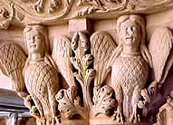

|
| |
Composto das lendas de fadas que
seduzem cavaleiros e os conduzem a regiões encantadas para
que tornem-se seus eternos amantes, seres híbridos e corajosos
heróis que combatem inimigos fantásticos em busca
de valores mais nobres, o imaginário medieval
tem origem na mitologia escandinava e céltica, abrigando
também vários elementos da mitologia grega. Mas,
ao longo dos séculos, agregou diversos elementos da tradição
judaico-cristã. Desse modo, tornou-se uma referência
criativa no romantismo através da percepção
artística deste período e, ainda hoje, sofre constantes
releituras.
Pode-se
citar como exemplo Romeu e Julieta (William Shakespeare)
que tem suas origens na obra de Arthur Brooke (The Tragicall
History of Romeus and Juliet - 1562) que, por sua vez, também
buscou inspiração em lendas como Tristão
e Isolda. Novamente, Tristão e Isolda foi tema do
compositor romântico Richard Wagner, na segunda metade do
século XIX.
Em O Senhor dos Anéis
(The Lord of the Rings - J. R. R. Tolkien) encontra-se diversos
elementos que remetem ao imaginário medieval, como a ambientação
(castelos e florestas) e os personagens que compõem a trama
(elfos, fadas e magos). A seqüência de Harry Potter
(J.K. Rowling) também faz uso de um lugar encantado (Escola
de Magia e Bruxaria de Hogwarts), recursos e ferramentas mágicas
e criaturas sobrenaturais. Do mesmo modo, a série de lendas
arthurianas (como o Santo
Graal e Tristão e Isolda) que recentemente
foram abordadas cinematograficamente.
Um fator interessante a ser considerado
é a representação simbólica do contexto
dessas lendas. Na numerosa série dos populares contos de
fadas, uma importante referência que reúne os elementos
do imaginário medieval, encontra-se um enredo com fundamento
moral entrelaçado com a própria trama. A tradicional
lenda de A Bela Adormecida é um exemplo no qual
a personagem principal pode-se libertar da maldição
que a adormeceu apenas através do beijo de um príncipe
encantado. Neste caso, fica clara a fundamentação
moral de que o amor (como elemento metafórico) é
capaz de libertar a humanidade de seu "eterno sono".
Os contos de fadas muitas vezes se confundem com as fábulas,
que também são igualmente importantes na composição
do imaginário medieval.
Bestiário
Medieval
Nas ilustrações, na arquitetura românica
e em seguida com o florescimento da arquitetura
gótica, o imaginário medieval manifestou-se
nos manuscritos e na ornamentação das catedrais
através de representações fantásticas,
como gárgulas
e quimeras, e criaturas reais, como aves e animais aquáticos.
O boi, o carneiro, o burro, combinam-se com a raposa,
o lobo, o urso e as aves de rapina; ou com répteis, como
a serpente. Paralelamente, encontra-se animais que não
compõem a fauna européia, como o macaco, o camelo,
elefante e leão. Estes seres figuram nos pórticos,
arquivoltas e capitéis de igrejas e mosteiros, bem como
nos antigos manuscritos, simbolizando as virtudes e os vícios
humanos, associando-se a determinados personagens, episódios
e dogmas bíblicos, como os sete pecados; por vezes, com
o intuito de catequizar os iletrados através das imagens.
Estas criaturas híbridas (antropomórficas
e zoomórficas) possuem características próprias,
como fazer uso de encantamentos e transmutação física.
Assumem características iconográficas atribuídas
aos seus animais correspondentes e comumente são representados
em situações simbólicas (como em combates)
ou exercendo atividades rotineiras (como o tear); mas em todos
os casos há uma simbologia a ser interpretada pelo observador
(acompanhe abaixo alguns animais reais e fantásticos que
compõem o imaginário medieval).
|
Sereia
A figura da sereia tanto pode se associar
ao conceito da salvação e da redenção,
como às forças maléficas do pecado.
Há, por exemplo, duas categorias de representações
das sereias: a sereia-peixe e a sereia-pássaro.
A primeira, com a aparência física de um
ser meio homem meio peixe, representavam divindades marítimas
(resgatadas do folclore escandinavo). A sereia-pássaro,
com a cabeça humana (com feições
masculinas ou femininas) e corpo de pássaro, representava
a alma condenada dos mortos; que, com seu canto sedutor,
levava os navegantes ao naufrágio.
|
|
Dragão
O dragão é um animal fantástico
que tem presença constante na cultura medieval.
Porém, sua origem remonta à antiguidade
de várias culturas. É possível que
a "imagem" do dragão, uma serpente ou
réptil alado e de proporções gigantescas,
tenha sido idealizada a partir de fósseis de dinossauros.
Na Idade Média, principalmente por influência
das citações bíblicas, o dragão
foi associado a aspectos maléficos (como
a serpente), sempre como um inimigo mortal e poderoso.
Uma célebre representação é
a de São Jorge, montado à cavalo,
ferindo um dragão com sua lança; numa
clara alusão da vitória do bem (cristianismo)
sobre o mal (o dragão pagão). Ainda,
o Dragão figura freqüentemente na heráldica
medieval.
|
|
Grifo
O grifo, animal que possui cabeça
e asas de águia e corpo de leão, também
é encontrado em brasões. Sua conotação
é (geralmente) positiva; pois representa a águia
(rainha das aves) e o leão (rei dos animais terrestres).
Há uma lenda de que os grifos entraram em combate
com os cavalos que tentaram roubar o seu ouro. Assim,
há uma grande rivalidade entre grifos e cavalos;
fato que levou cavaleiros medievais a utilizar escudos
com a imagem de grifos, para desencorajar os cavalos dos
inimigos. Há ainda o hipogrifo, que seria o resultado
do cruzamento de um grifo com uma égua.
|
|
Basilisco
O basilisco é descrito como uma
serpente com cabeça de galo que nasce quando um
ovo de galinha é chocado por um sapo. Em algumas
representações, devido ao tamanho e por
estar dotado de patas, é confundido com dragões.
O basilisco seria capaz de matar apenas fixando o seu
olhar sobre a presa. Segundo as lendas, é responsável
por conduzir a alma desencarnada dos condenados ao inferno.
|
 |
Harpia
A harpia, que na mitologia grega foi enviada
para roubar o alimento do rei cego conhecido por Fineu,
é mais uma representação com corpo
de ave e cabeça e tórax humano (tanto masculino
como feminino) e está associada (geralmente) à
luxúria e a entrega do homem aos prazeres sexuais.
|
|
Centauro
Os centauros são mais uma representação
oriunda da mitologia grega. Com o corpo de eqüino
e tórax, braços e cabeça humana,
representa a brutalidade. Na iconografia cristã,
também está associado à lascívia.
|
|
Unicórnio
O unicórnio é uma das representações
que se atribui significados. Oriundo também da
mitologia grega, na Idade Média, estava associado
à pureza da virgindade; portanto, é comum
encontrá-lo retratado junto a uma dama. Por outro
lado, na heráldica, pode representar a nobreza
e a virilidade. Ainda, há a lenda de que seu chifre
é capaz de neutralizar qualquer veneno e curar
todas as doenças.
|
|
Leucrota
A leucrota é do tamanho de um eqüino
com o traseiro de um veado e peito e patas de um leão,
cabeça de cavalo e a mandíbula aberta até
altura das as orelhas, com um osso maxilar ao invés
dos dentes. Uma de suas habilidades é produzir
sons semelhantes à voz humana.
|
|
Porco
O porco está associado à
gula ou luxúria. Santo Isidoro de Sevilha atestava
que "os porcos são imundos porque se revolvem
e sujam na terra à procura de alimentos".
Na obra Hortus Sanitatis (1485), Jehann von Cube
reafirma a associação do porco à
luxúria, referindo também à precocidade
sexual do animal, que aos oito meses já é
capaz de copular.
|
|
Aves
De uma forma geral, as aves recebem atribuições
positivas; já que as asas simbolizam a capacidade
de voar e alcançar o Reino Divino no céu.
Também é comum encontrá-las picando
as próprias patas, numa alusão ao ato de
"despregar-se" da sua natureza terrena. A pomba
e a águia são as aves mais comuns nestes
contextos.
|
| |
Leões
Leões estão associados à
força e nobreza. É comum encontrá-los
nas entradas principais de templos religiosos exercendo
a função de guardiões do templo,
como se alertassem o observador que aquele local é
sagrado e restrito. Na bíblia, pode assumir um
caráter positivo (como o leão de Judá,
os leões do trono de Salomão ou o leão
de São Marcos), como uma imagem negativa, como
os leões que Daniel tem de enfrentar.
|
|
Touro
O touro, que está presente em diversas
culturas da Antiguidade, sempre recebeu atributos positivos
por sua força e coragem. Entretanto, durante a
solidificação do cristianismo medieval,
devido aos chifres e patas, recebeu uma conotação
demoníaca.
|

|
|
|
 |
|